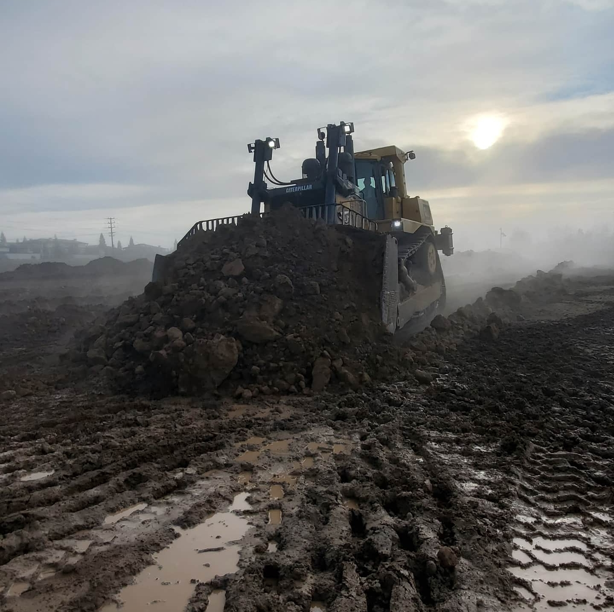

Zachary Colburn Resume

Contact Information
"Jarret Builders" April 2022 - Present
Follow instructions from formen to grade and develop jobsite with equipment.
"Forgen" August 2020 - April 2022
Operate earth moving equipment to contruct a 7 mile levee to Army Corp of Engineers standards. Follow site instructions from site foreman to get the job done as safe as possible.
Western Engineering May 2018 - August 2020
Operate equipment in a proficient manner to complete the job at hand. Paying close attention to construction plan and resolving any issues that may occur.
"Magnus Pacific" January 2012 - May 2018
I started as a laborer, working with multiple groups in the company assisting in tasks ranging from installing pipe to erosion control. After two years as a laborer I got my chance to start running heavy equipment.